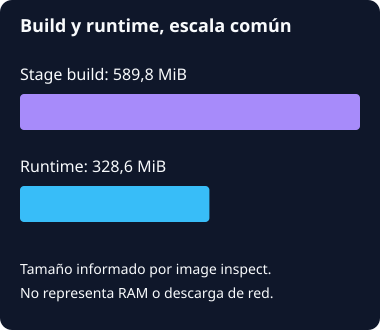

Una API, Redis y PostgreSQL en Compose
Recorrido local archivado. Los controles recorren una captura; no ejecutan Docker ni modifican servicios.
Cargando captura…
Las barras cuentan notas observadas en PostgreSQL. Una fase sin recuento no hereda el de la anterior.
Lectura de esta fase
Persistencia a lo largo del recorrido
| Fase | Filas al observar | Filas al final de fase | Clase de dato |
|---|
Hechos completos de la fase
Tamaño local de las images

No hay scan, firma, backup restore o benchmark de producción en esta ejecución. Los nombres de proyecto y las notas son del fixture.